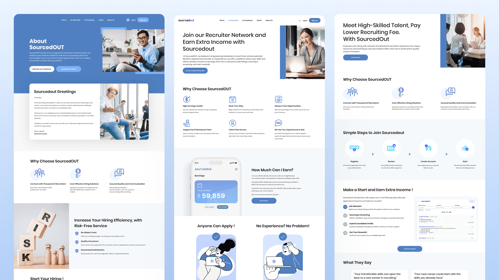

Requirement
SourcedOut needed a responsive landing page that could explain a recruitment marketplace serving three distinct groups: freelance recruiters looking for flexible income, employers looking for qualified talent, and job seekers looking for new opportunities.
The main challenge was to introduce one connected platform without forcing every visitor through the same message. Each audience needed to quickly recognize its own value proposition and move toward the right next step.
- Business goal: Grow the recruiter community, generate employer hiring requests, and connect more candidates with suitable opportunities.
- Core message: Present SourcedOut as a flexible recruitment network that connects employers and talent through more than 2,000 professional recruiters.
- Audience pathways: Give freelance recruiters, employers, and job seekers clear entry points with role-specific benefits and calls to action.
- Trust and proof: Explain SourcedOut’s relationship with Reeracoen, communicate the success-based hiring model, and use recruiter testimonials to build confidence in the platform.
- Content hierarchy: Move from the shared brand promise to audience selection, platform benefits, social proof, role-specific sign-up actions, frequently asked questions, and contact details.
- Responsive experience: Keep the three pathways, supporting proof, and primary actions easy to compare and use across desktop, tablet, and mobile screens.

Design Thinking Process
I used a design thinking process to understand the needs of each audience and organize the landing page around role recognition. This helped the shared SourcedOut story remain consistent while allowing visitors to quickly find the information and action most relevant to them.
Empathize
I reviewed the goals and concerns of freelance recruiters, employers, and job seekers. Recruiters needed flexibility and support, employers needed qualified candidates with lower hiring risk, and talent needed a credible route to suitable opportunities.
Define
I defined the central communication problem: the homepage needed to explain what connects the three audiences while making it immediately clear where each person should go and why the platform is useful to them.
Ideate
I explored a role-based content flow with a shared hero, three audience cards, concise platform benefits, recruiter testimonials, repeated participation prompts, and FAQs that address trust, flexibility, cost, and geographic reach.
Prototype
I created responsive wireframes and high-fidelity designs in Figma, testing how the three pathways, testimonial content, benefit statements, and calls to action could stay distinct without making the page feel fragmented.
Test and refine
I reviewed the structure with business teams, project managers, stakeholders, and engineers. Feedback helped clarify audience labels, simplify value propositions, improve mobile scanning, and strengthen the path from learning about SourcedOut to joining the platform.
The final direction gives SourcedOut one clear brand story with three focused journeys. Its reusable section structure can support future campaigns, recruiter stories, employer proof points, and expansion into new markets.